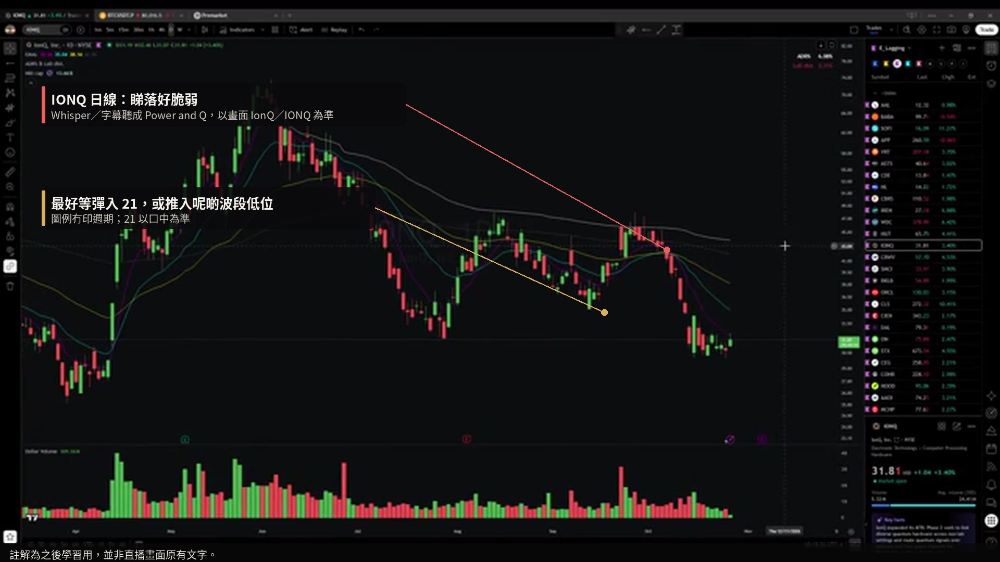

概要
脆弱唔等於即刻係最好入場
59:35 佢指住另一隻話睇落好脆弱。不過覺得最好仍係等彈入 21，或者推入呢啲波段低位。畫面係 IONQ 日線。Whisper 同字幕把 IONQ 聽成 Power and Q。
圖一
IONQ 日線：睇落好脆弱
直播 59:36

原話
One thumbs up, another short. IONQ right here looks very vulnerable. Although, I think the pullback into the 21 would be the best. Also, pushing into this swing lows.
再多一隻淡倉。IONQ 呢度睇落好脆弱。不過，我覺得彈入 21 會係最好。亦都係推入呢啲波段低位。
Whisper 同 YouTube 字幕把 IONQ 聽成 Power and Q。畫面係 IonQ, Inc.（IONQ），以畫面為準。前幾秒曾掃過 APLD，對白轉到「another short」時先係 IONQ。
點樣讀
「脆弱」同「最好入場」分開：而家睇落弱，但佢仍然想等 21 或者波段低位。
21 以口中為準，圖例冇印週期。畫面公司名只當圖上文字。
附註
注意事項
- 原話開頭 One thumbs up 只係口頭帶過，唔另作分析。